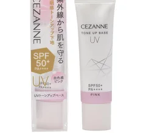

溝が暗く見える・顔色が悪く見える人（隠すより色で明るく）

セザンヌ
UVトーンアップベース ピンク
30g・SPF50+ PA++++・洗顔料で落とせる
¥748税込・出典掲載価格
選び方と声
- 選ぶ条件：溝をコンシーラーで埋めていた人。口元の影で顔色が悪く見える人
- 量はパール粒1つ。ほうれい線のところは塗り広げず、指でとんとん叩き込む（コーセーのコントロールカラーの解説）
- ほどよい血色が出て顔が明るくなる、変に白くならない、塗り口が細くて出しすぎない、という声
気になる声気になる点：カバー力はほとんどない、保湿の感じ方は人によって分かれる、という声。フェイスラインまで伸ばすと顔全体が白く見えます
販売価格・容量・送料はリンク先でご確認ください